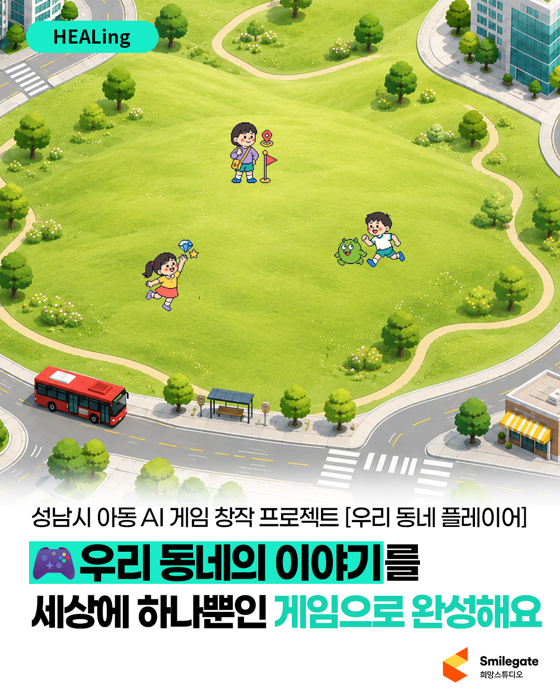

OUR NEIGHBORHOOD, OUR GAME
매일 걷던 우리 동네가
게임이 된다면?
학교 앞 가게, 비 오는 놀이터, 좋아하는 간식까지.
작은 일상에 상상 한 스푼! 우리만의 게임을 만들어 봐요.

상상이 시작되는 곳
우리 게임 만들기
01 / 08
상상이 게임의
설계도가 되었어요.
우리 팀의 답변을 확인하고, 프롬프트를 복사해요.
우리 팀이 정한 이야기
READY TO COPY
AI 게임 제작 프롬프트
0자
우리 팀이 비워 둔 항목은 ‘제안 기본값’으로 표시돼요. 제작 전에 멘토와 함께 확인해 주세요.